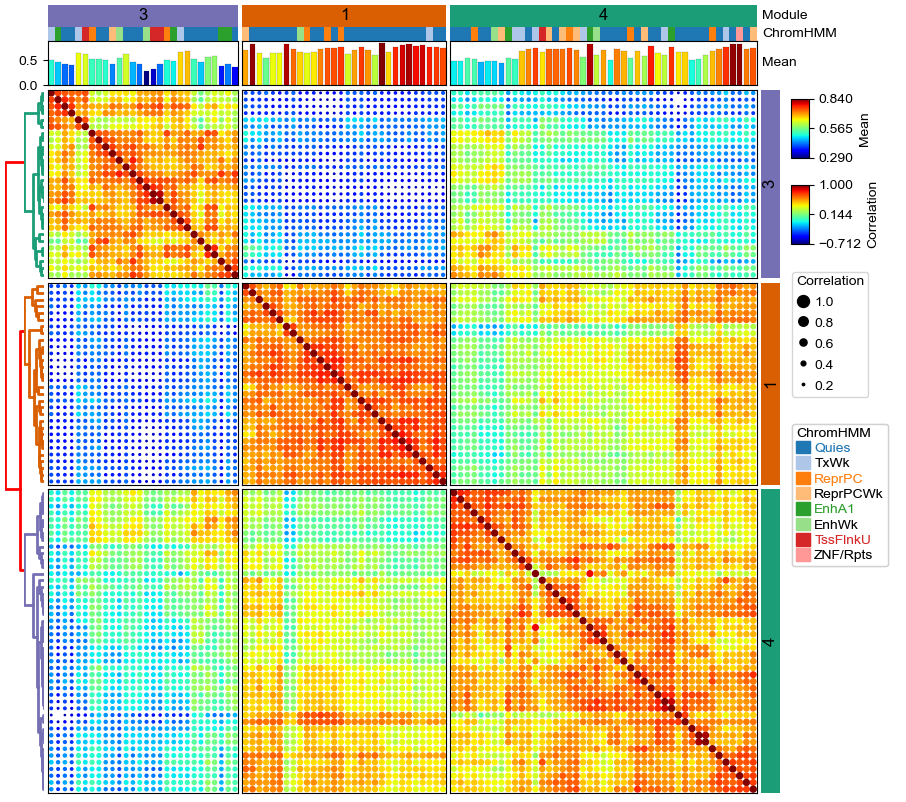

Plot correlation matrix for CpG modules using DotClustermap¶
Processing the data¶
[1]:
import os,sys
%matplotlib inline
import matplotlib.pylab as plt
# sys.path.append(os.path.expanduser("~/Projects/Github/PyComplexHeatmap/"))
from PyComplexHeatmap import *
from matplotlib.colors import LinearSegmentedColormap
df_corr = pd.read_csv("../data/kycg_modles_correlations.csv",sep='\t',index_col=0)
df_ann = pd.read_csv("../data/kycg_modles_annotations.csv",sep='\t')
df_ann.set_index('CpG',inplace=True)
df_ann.Module=df_ann.Module.astype(str)
[2]:
df_ann.Module.value_counts().head(10)
[2]:
4 45
1 30
3 28
9 17
2 17
39 17
37 16
45 13
33 13
6 12
Name: Module, dtype: int64
[3]:
df_ann.loc[df_ann.Module.isin(['4','1','3','9','2','39','37'])].HM.unique()
[3]:
array(['H3K4me1;H3K79me2;H3K79me3', 'H3F3A;H4K20me1', nan,
'H2BK20ac;H3K4me1', 'H3F3A;H3K23me2', 'H2BK20ac', 'H2AFY', 'H3F3A',
'H4K20me1', 'H2AK9ac;H2BK12ac;H2BK15ac;H2BK20ac;H3K9me1',
'H3K9me1', 'H3K23me2', 'H2BK120ub', 'H2BK12ac', 'H2AZac;H3K79me1',
'H2A;H2AZac;H3_4ac;H3K27me1;H3K4me3B;H3K56ac;H3K79me1;H3K9ac_H3K14ac;H3K9K14ac',
'CENPA;H1.0;H1.4;H2A;H2AFZ;H2AK119;H2AK9ac;H2AZac;H3.3;H3.3,H2A.Z;H3ac;H3K27ac;H3K27me1;H3K4me3;H3K4me3B;H3K79me1;H3K9ac;H3K9ac_H3K14ac;H3K9K14ac;H4;H4ac;H4K5ac;H4K5ac_H4K8ac_H4K12ac_H4K16ac;H4K8ac;HistoneLysineAcetylation;HistoneLysineCrotonylation',
'H1.0',
'H3K18cr;H4K16ac;HistoneLysineAcetylation;HistoneLysineCrotonylation',
'H4K12ac', 'H1.4', 'H4K5ac_H4K8ac_H4K12ac_H4K16ac',
'H1.4;H3K79me1;H4ac;H4K12ac;H4K5ac_H4K8ac_H4K12ac_H4K16ac',
'H3K23me2;H3K27me3B', 'H4', 'H1.4;H3K79me1',
'H2AZac;H3;H3K4me3;H3K4me3B;H3K79me1;H4K5ac;H4K5ac_H4K8ac_H4K12ac_H4K16ac',
'H2AK9ac;H3K79me1;H3K9me1', 'H2Bub',
'H2AK5ac;H2AK9ac;H3K79me1;H4K20me1', 'CENPA', 'H3.3;H3F3A',
'H2AK9ac;H2BK12ac;H2BK15ac;H2BK20ac;H3F3A;H3K4me1', 'H3K36me3B',
'H2BK12ac;H3K79me1;H3K9me1;H4', 'H1.0;H1.4;H2BK15ac',
'H2AK5ac;H2AK9ac;H2BK120ac;H2BK12ac;H2BK15ac;H2BK20ac;H3;H3F3A;H3K27me3B;H3K36ac;H3K4me1;H4K91ac',
'H2AK5ac;H2AK9ac;H2BK120ac;H2BK15ac;H2BK20ac', 'H3K27me1',
'H2AK119', 'H2AK9ac;H2BK12ac;H3K79me1;HistoneLysineCrotonylation',
'H3K79me1;H4K20me3', 'H3K27me1;H4K5ac_H4K8ac_H4K12ac_H4K16ac',
'H1.0;H1.4;HistoneLysineCrotonylation',
'H1.0;H1.4;H3K27me1;H3K27me3B', 'H1.4;H3F3A;H3K27me3B', 'H3.3',
'H2AK5ac;H2BK12ac;H2BK15ac;H3K27me1;H3K79me1;HistoneLysineAcetylation',
'H2AK5ac;H2BK12ac;HistoneLysineCrotonylation', 'H1.0;H2AK119',
'H2AFY;H3K36me3B', 'HistoneLysineCrotonylation',
'H3K36me3B;HistoneLysineCrotonylation', 'H2AFY2', 'H3K79me3',
'H3K36me2;HistoneLysineAcetylation;HistoneLysineCrotonylation',
'H2AK5ac;H3K36me3B;HistoneLysineAcetylation;HistoneLysineCrotonylation',
'H2AK119;H3K27me3;H3K27me3B',
'H2AK119;H2AK119ub;H3K27me3;H3K27me3B',
'H2AK119;H2AK119ub;H3K27me3', 'H2AK119;H3K23me2;H3K27me3',
'H2AK119;H2AK119ub;H3K23me2;H3K27me3'], dtype=object)
[4]:
df_corr.head()
[4]:
| cg04735237 | cg00643814 | cg24865495 | cg25376651 | cg27485084 | cg12609052 | cg07354679 | cg02592525 | cg12747056 | cg17718960 | ... | cg19987665 | cg18406033 | cg09678971 | cg00461612 | cg18689454 | cg11923631 | cg27251412 | cg08089567 | cg16717549 | cg09510531 | |
|---|---|---|---|---|---|---|---|---|---|---|---|---|---|---|---|---|---|---|---|---|---|
| cg04735237 | 1.000000 | 0.559916 | 0.686845 | 0.561415 | 0.699960 | 0.711086 | 0.563690 | 0.527953 | 0.621757 | 0.623319 | ... | 0.048462 | 0.103904 | -0.002533 | 0.074093 | -0.114526 | -0.151763 | -0.140823 | -0.117356 | -0.100510 | -0.126291 |
| cg00643814 | 0.559916 | 1.000000 | 0.538034 | 0.568960 | 0.687787 | 0.593650 | 0.676068 | 0.606604 | 0.589549 | 0.747987 | ... | -0.185989 | -0.087952 | -0.242909 | -0.065101 | -0.054958 | -0.096098 | -0.089246 | -0.078234 | -0.025965 | -0.069120 |
| cg24865495 | 0.686845 | 0.538034 | 1.000000 | 0.614696 | 0.646452 | 0.786480 | 0.602911 | 0.519926 | 0.642344 | 0.642081 | ... | 0.022499 | 0.108524 | -0.015151 | 0.028957 | -0.274560 | -0.302464 | -0.284823 | -0.265835 | -0.262931 | -0.268134 |
| cg25376651 | 0.561415 | 0.568960 | 0.614696 | 1.000000 | 0.564983 | 0.727579 | 0.624186 | 0.416198 | 0.505130 | 0.596338 | ... | -0.030346 | 0.122412 | -0.063630 | -0.007048 | -0.197339 | -0.226034 | -0.218230 | -0.180297 | -0.181867 | -0.204431 |
| cg27485084 | 0.699960 | 0.687787 | 0.646452 | 0.564983 | 1.000000 | 0.655515 | 0.599935 | 0.590981 | 0.627786 | 0.674095 | ... | -0.020895 | 0.058742 | -0.078318 | 0.055019 | -0.139691 | -0.168351 | -0.160081 | -0.142216 | -0.114554 | -0.144024 |
5 rows × 512 columns
[5]:
df_ann.head()
[5]:
| Module | ChromHMM | ChromHMM_bioc | HM | TFBS | genes | |
|---|---|---|---|---|---|---|
| CpG | ||||||
| cg04735237 | 1 | TxWk | TxWk | H3K4me1;H3K79me2;H3K79me3 | HDGF;RBFOX2;SREBF1 | PQBP1 |
| cg00643814 | 1 | Quies | Quies | H3F3A;H4K20me1 | ASCL1;CASZ1;EBF1;FEZF1;FOXM1;HAND2;HDAC3;IRF2BP2;ISL1;MAFB;NEUROG2;NKX3-1;OSR2;PAX6;PAXIP1;PDX1;PHOX2B;PRDM4;PRDM6;RBBP4;SCRT1;SIX1;SMARCA2;SMC1A-B;SP140L;TSHZ1;WT1;ZBTB21;ZBTB44;ZBTB7B;ZBTB8A;ZNF10;ZNF189;ZNF2;ZNF213;ZNF335;ZNF35;ZNF366;ZNF528;ZNF561;ZNF580;ZNF629;ZNF843;ZXDB | NaN |
| cg24865495 | 1 | Quies | Quies | NaN | CRX;DNMT3B;OTX2;RORB;ZMYND11;ZNF711 | MACROD1 |
| cg25376651 | 1 | Quies | Quies | H2BK20ac;H3K4me1 | ATF2;BATF;ETV6;FOS;IKZF2;IRF4;JUNB;MAF;MAFG;MEF2B;NFATC3;NFE2L2;NR1H2;PPARG;RELB;SKIL;SMAD3-HIF1A;SMARCA5;SMARCD3;TBX21;TERF1;TRIM22;ZFP36 | FRY |
| cg27485084 | 1 | Quies | Quies | H3F3A;H3K23me2 | PDX1 | NaN |
[6]:
df_ann=df_ann.loc[df_ann.Module.isin(['4','1','3','9','2','39'])]
keep_cpgs=df_ann.index.tolist()
df_corr=df_corr.loc[keep_cpgs,keep_cpgs]
data=df_corr.stack().reset_index()
data.columns=['X','Y','Correlation']
data['Module']=data.X.map(df_ann.Module.to_dict())
data['ChromHMM']=data.X.map(df_ann.ChromHMM.to_dict())
keep_hm=['H3K4me1','H3K4me3','H3K27me1','H3K27me3B']
for hm in keep_hm:
df_ann[hm]=df_ann.HM.fillna('').apply(lambda x:1 if hm in x.split(';') else 0)
data[hm]=data.X.map(df_ann[hm].to_dict())
[7]:
print(df_ann.shape)
df_ann.head()
(154, 10)
[7]:
| Module | ChromHMM | ChromHMM_bioc | HM | TFBS | genes | H3K4me1 | H3K4me3 | H3K27me1 | H3K27me3B | |
|---|---|---|---|---|---|---|---|---|---|---|
| CpG | ||||||||||
| cg04735237 | 1 | TxWk | TxWk | H3K4me1;H3K79me2;H3K79me3 | HDGF;RBFOX2;SREBF1 | PQBP1 | 1 | 0 | 0 | 0 |
| cg00643814 | 1 | Quies | Quies | H3F3A;H4K20me1 | ASCL1;CASZ1;EBF1;FEZF1;FOXM1;HAND2;HDAC3;IRF2BP2;ISL1;MAFB;NEUROG2;NKX3-1;OSR2;PAX6;PAXIP1;PDX1;PHOX2B;PRDM4;PRDM6;RBBP4;SCRT1;SIX1;SMARCA2;SMC1A-B;SP140L;TSHZ1;WT1;ZBTB21;ZBTB44;ZBTB7B;ZBTB8A;ZNF10;ZNF189;ZNF2;ZNF213;ZNF335;ZNF35;ZNF366;ZNF528;ZNF561;ZNF580;ZNF629;ZNF843;ZXDB | NaN | 0 | 0 | 0 | 0 |
| cg24865495 | 1 | Quies | Quies | NaN | CRX;DNMT3B;OTX2;RORB;ZMYND11;ZNF711 | MACROD1 | 0 | 0 | 0 | 0 |
| cg25376651 | 1 | Quies | Quies | H2BK20ac;H3K4me1 | ATF2;BATF;ETV6;FOS;IKZF2;IRF4;JUNB;MAF;MAFG;MEF2B;NFATC3;NFE2L2;NR1H2;PPARG;RELB;SKIL;SMAD3-HIF1A;SMARCA5;SMARCD3;TBX21;TERF1;TRIM22;ZFP36 | FRY | 1 | 0 | 0 | 0 |
| cg27485084 | 1 | Quies | Quies | H3F3A;H3K23me2 | PDX1 | NaN | 0 | 0 | 0 | 0 |
[8]:
print(data.shape)
data.head()
(23716, 9)
[8]:
| X | Y | Correlation | Module | ChromHMM | H3K4me1 | H3K4me3 | H3K27me1 | H3K27me3B | |
|---|---|---|---|---|---|---|---|---|---|
| 0 | cg04735237 | cg04735237 | 1.000000 | 1 | TxWk | 1 | 0 | 0 | 0 |
| 1 | cg04735237 | cg00643814 | 0.559916 | 1 | TxWk | 1 | 0 | 0 | 0 |
| 2 | cg04735237 | cg24865495 | 0.686845 | 1 | TxWk | 1 | 0 | 0 | 0 |
| 3 | cg04735237 | cg25376651 | 0.561415 | 1 | TxWk | 1 | 0 | 0 | 0 |
| 4 | cg04735237 | cg27485084 | 0.699960 | 1 | TxWk | 1 | 0 | 0 | 0 |
Plotting the Dot clustermap¶
[9]:
row_ha = HeatmapAnnotation(Module=anno_simple(df_ann.Module,cmap='Dark2',legend=False,height=5,
add_text=True,text_kws={'color':'black','fontsize':12}),
axis=0,verbose=0,label_kws={'visible':False})
all_cmaps=matplotlib.pyplot.colormaps()
if 'binarize' not in all_cmaps:
c = LinearSegmentedColormap.from_list('binarize', [(0, 'lightgray'), (1, 'black')])
plt.register_cmap(cmap=c)
col_ha = HeatmapAnnotation(#label=anno_label(df_col.ColGroup, merge=True,rotation=45),
Module=anno_simple(df_ann.Module,cmap='Dark2',legend=False,height=5,
add_text=True,text_kws={'color':'black','fontsize':12}),
ChromHMM=anno_simple(df_ann.ChromHMM,cmap='tab20'),
H3K4me1=anno_simple(df_ann.H3K4me1,cmap='binarize',legend=False),
H3K4me3=anno_simple(df_ann.H3K4me3,cmap='binarize',legend=False),
H3K27me1=anno_simple(df_ann.H3K27me1,cmap='binarize',legend=False),
H3K27me3B=anno_simple(df_ann.H3K27me3B,cmap='binarize',legend=False),
verbose=0,label_side='right',label_kws={'horizontalalignment':'left'})
plt.figure(figsize=(10, 9))
cm = DotClustermapPlotter(data=data, x='X',y='Y',value='Correlation',c='Correlation',s='Correlation',
hue='Module', cmap='jet',#cmap={'High':'Reds','Middle':'Purples','Low':'Greens'},
#colors={'High':'red','Middle':'purple','Low':'green'},
#marker={'4':'P','1':'*','3':'D'},
top_annotation=col_ha,right_annotation=row_ha,
col_split=df_ann.Module,row_split=df_ann.Module, col_split_gap=1,row_split_gap=1,
row_dendrogram=True,legend_anchor="ax_heatmap",legend_hpad=7,legend_vpad=5,
tree_kws={'row_cmap':'Dark2'},verbose=0,legend_gap=7,alpha=2)
plt.savefig("dotClustermap.pdf", bbox_inches='tight')
plt.show()

[10]:
print(data.X.nunique())
154
A smaller dot clustermap¶
Another example dot clustermap with a smaller set of cpgs and add spines to the heatmap using parameter spines=True.
[11]:
df_ann=df_ann.loc[df_ann.Module.isin(['4','1','3'])]
keep_cpgs=df_ann.index.tolist()
df_corr=df_corr.loc[keep_cpgs,keep_cpgs]
data=df_corr.stack().reset_index()
data.columns=['X','Y','Correlation']
data['Module']=data.X.map(df_ann.Module.to_dict())
data['ChromHMM']=data.X.map(df_ann.ChromHMM.to_dict())
keep_hm=['H3K4me1','H3K4me3','H3K27me1','H3K27me3B']
for hm in keep_hm:
df_ann[hm]=df_ann.HM.fillna('').apply(lambda x:1 if hm in x.split(';') else 0)
data[hm]=data.X.map(df_ann[hm].to_dict())
[12]:
row_ha = HeatmapAnnotation(Module=anno_simple(df_ann.Module,cmap='Dark2',legend=False,height=5,
add_text=True,text_kws={'color':'black','fontsize':12}),
axis=0,verbose=0,label_kws={'visible':False})
all_cmaps=matplotlib.pyplot.colormaps()
if 'binarize' not in all_cmaps:
c = LinearSegmentedColormap.from_list('binarize', [(0, 'lightgray'), (1, 'black')])
plt.register_cmap(cmap=c)
col_ha = HeatmapAnnotation(#label=anno_label(df_col.ColGroup, merge=True,rotation=45),
Module=anno_simple(df_ann.Module,cmap='Dark2',legend=False,height=5,
add_text=True,text_kws={'color':'black','fontsize':12}),
ChromHMM=anno_simple(df_ann.ChromHMM,cmap='tab20'),
H3K4me1=anno_simple(df_ann.H3K4me1,cmap='binarize',legend=False),
H3K4me3=anno_simple(df_ann.H3K4me3,cmap='binarize',legend=False),
H3K27me1=anno_simple(df_ann.H3K27me1,cmap='binarize',legend=False),
H3K27me3B=anno_simple(df_ann.H3K27me3B,cmap='binarize',legend=False),
verbose=0,label_side='right',label_kws={'horizontalalignment':'left'})
plt.figure(figsize=(10, 9))
cm = DotClustermapPlotter(data=data, x='X',y='Y',value='Correlation',c='Correlation',s='Correlation',
hue='Module', cmap='jet',#cmap={'High':'Reds','Middle':'Purples','Low':'Greens'},
#colors={'High':'red','Middle':'purple','Low':'green'},
#marker={'4':'P','1':'*','3':'D'},
top_annotation=col_ha,right_annotation=row_ha,
col_split=df_ann.Module,row_split=df_ann.Module, col_split_gap=1,row_split_gap=1,
row_dendrogram=True,legend_anchor="ax_heatmap",legend_hpad=7,legend_vpad=5,
tree_kws={'row_cmap':'Dark2'},verbose=0,legend_gap=7,alpha=2,spines=True)
plt.savefig("dotClustermap2.pdf", bbox_inches='tight')
plt.show()
